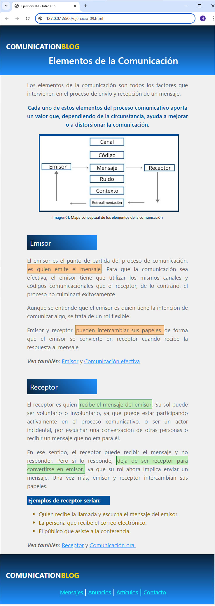

Ejercicio práctico Nº 11
Antes que nada
-
Para el siguiente ejercicio, deberá entregar la carpeta del ejercicio en formato .zip con el nombre tp11_nombre_suyo
-
Siga al pie de la letra las instrucciones que se incluyen el los archivos styles.css e index.html
-
Fecha límite de entrega: lunes 17/03 14:59hs.
Consigna
En el archivo styles.css
- A partir del código CSS que se entrega:
-
Lea detenidamente los comentarios/instrucciones que aparecen(en color verde)
-
NO agregue NI quite NI modifique ninguna regla CSS en la presente hoja de estilos
-
AGREGUE los selectores CSS que faltan a los estilos definidos.
-
ASIGNE dichos selectores CSS al documento HTML según las indicaciones
En el archivo index.html
- A partir del código HTML que se entrega:
-
Enlace el archivo de hojas de estilos que se encuentra en la carpeta css, al documento.
-
Lea detenidamente los comentarios/instrucciones (en color verde) y añada las clases definidas en la hoja de estilos css según las indicaciones
Muestra
